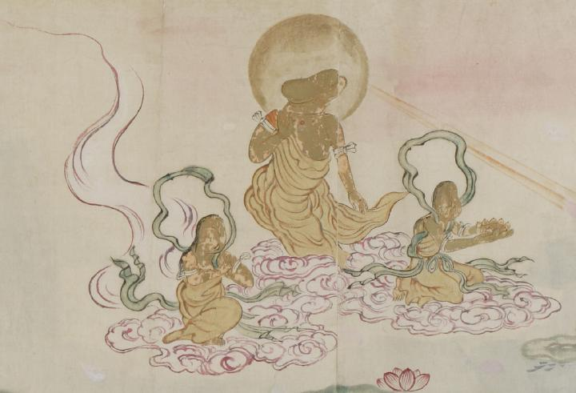

頭部が性器の阿弥陀三尊のような化物たち。3体ともに黄金色の法衣を身につけている。中央の化物の顔は男根の形で、光背がある。脇の2体は、女陰の顔をしており、緑色の帯をなびかせている。3体とも桃色の雲に乗り、画面右手の1体は腕に蓮の花のようなものを抱えている。
出典：親書誌：U426_nichibunken_0058：地獄草紙絵巻；ジゴクゾウシエマキ／日付：2006／資源識別子：U426_nichibunken_0058_0013_0000
Copyright (c)2010- International Research Center for Japanese Studies, Kyoto, Japan. All rights reserved.